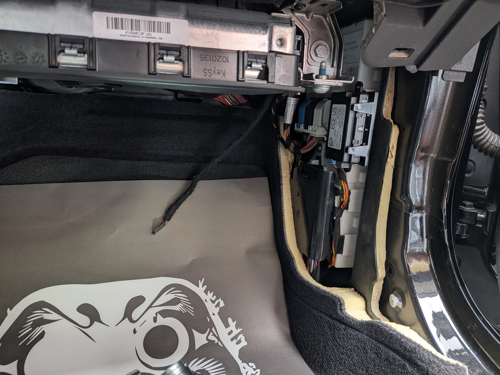

BMW Owner Guide
BMW 智慧鑰匙遺失與備份：車主詢問前要準備什麼
BMW 鑰匙問題常見於遺失、只剩一支、感應不到或車輛無法啟動。車主先整理車款年份、鑰匙狀態、停放照片與所在地行政區，能讓判斷更快。

BMW 案件會依車款、年份、鑰匙狀態與現場條件評估。
遺失或全丟
先確認車輛所在地、是否能開門、是否有備用鑰匙與儀表狀態，再評估是否適合到場。
只剩一支鑰匙
原鑰匙仍可使用時，先評估新增備份，能降低後續全丟或感應異常造成的用車風險。
詢問時建議提供
- BMW 車型、年份與所在地區。
- 目前鑰匙數量、是否還能開門或啟動。
- 儀表提示、鑰匙外觀與停放環境照片。
- 若是二手車或外縣市車輛，補充交車鑰匙數量與是否方便到場。
相關 BMW 入口
常見問題
BMW 只剩一支鑰匙需要先做備份嗎？
建議在原鑰匙仍可正常使用時先評估備份，通常比完全遺失後更容易安排，也能降低臨時無法用車的風險。
BMW 鑰匙遺失詢問時要準備什麼？
請準備車款年份、所在地、目前是否還有鑰匙、儀表提示與停放環境照片，避免提供車牌、證件或私人地址細節。
BMW 感應不到鑰匙一定是鑰匙壞掉嗎？
不一定。電池、車輛電壓、感應位置與車況都可能影響判斷，建議先提供現象照片與車款資訊讓 ProCore 評估。